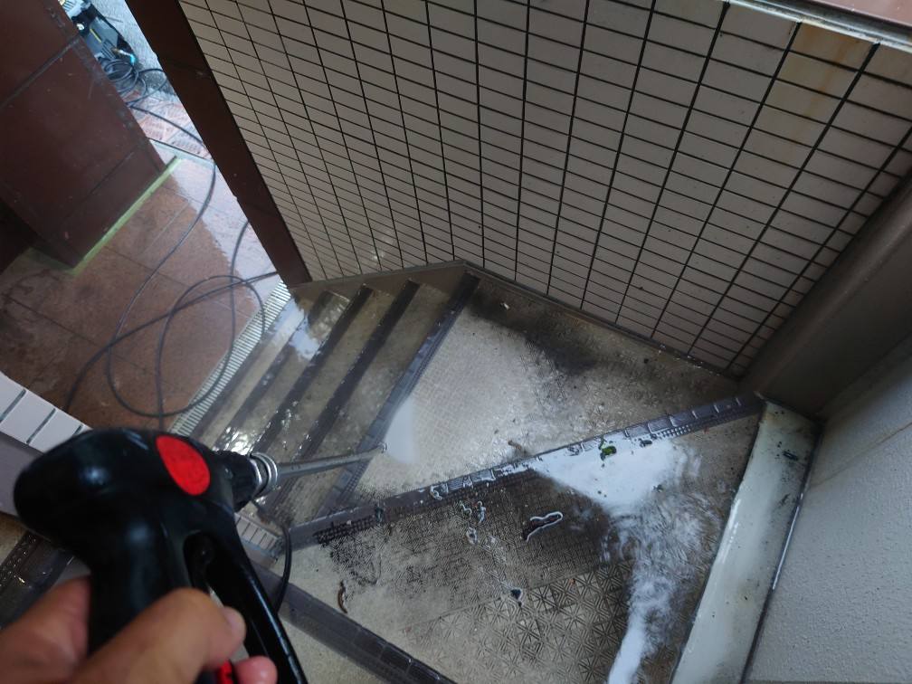
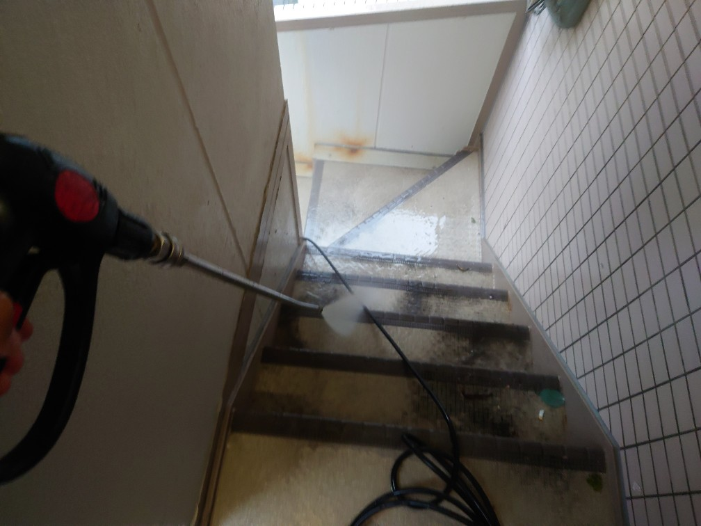
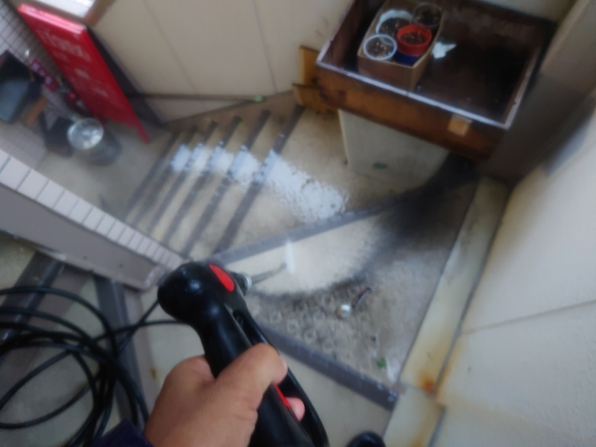
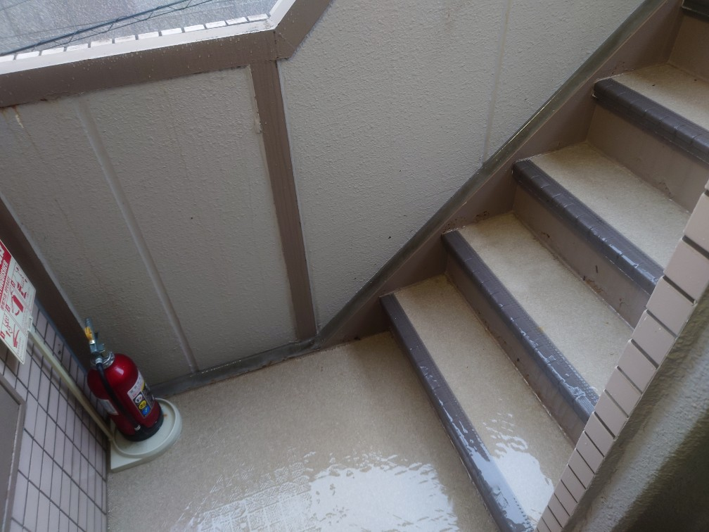
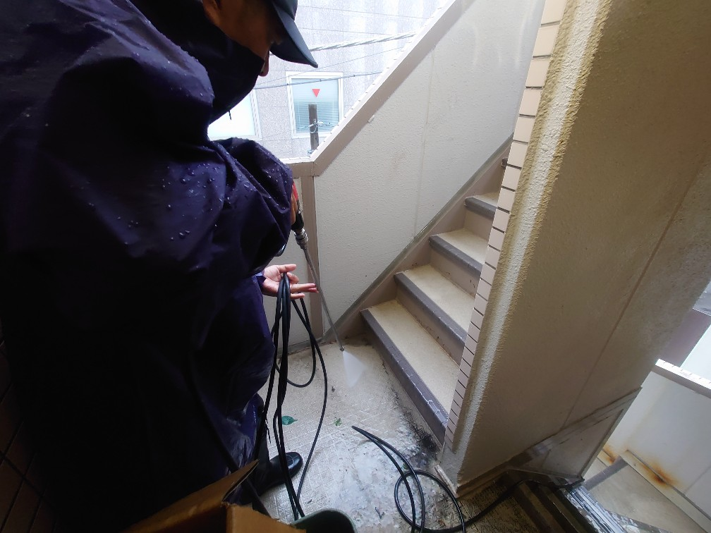
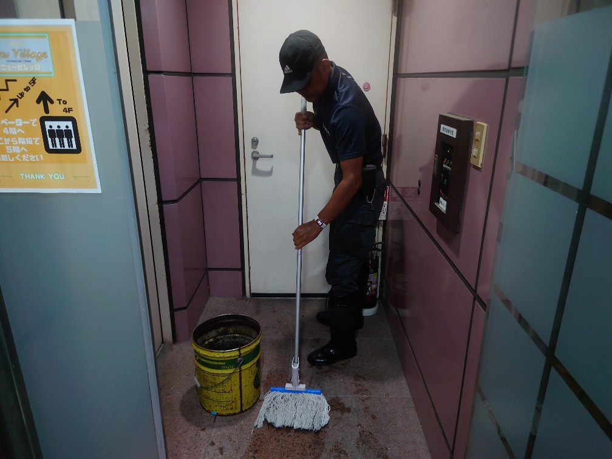
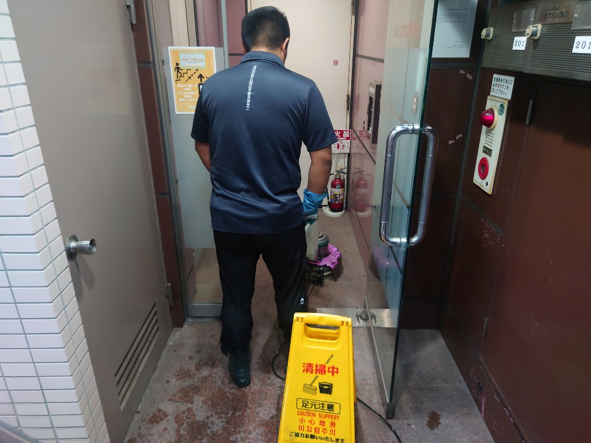
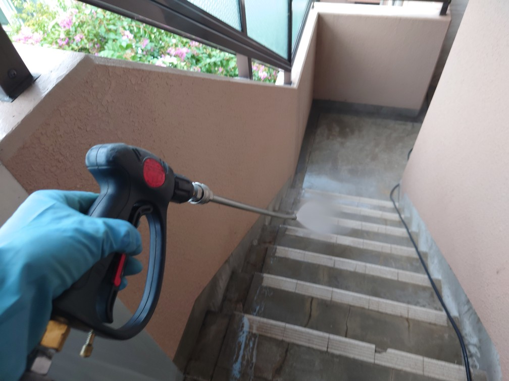
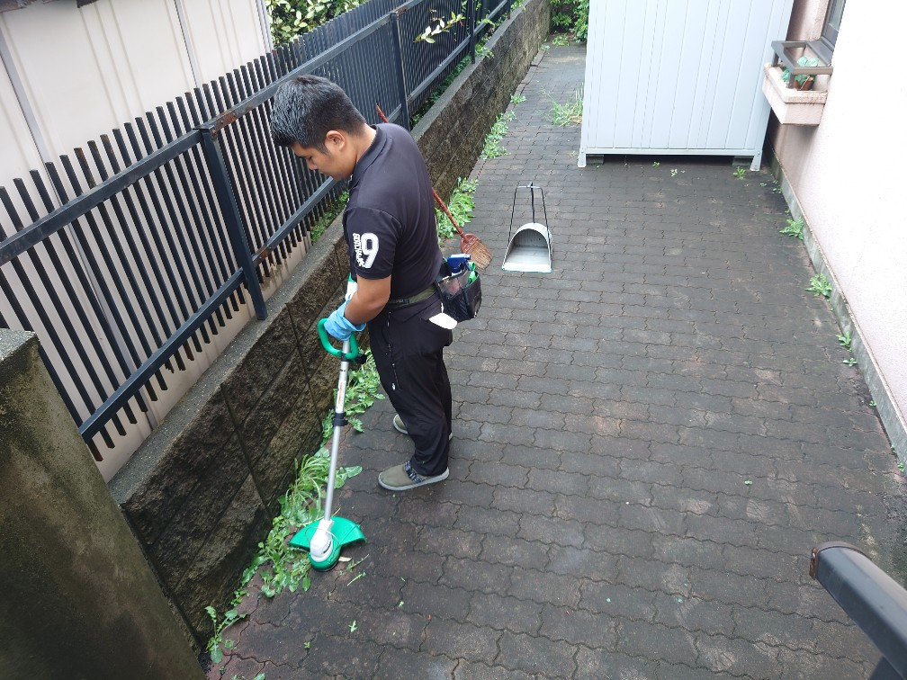
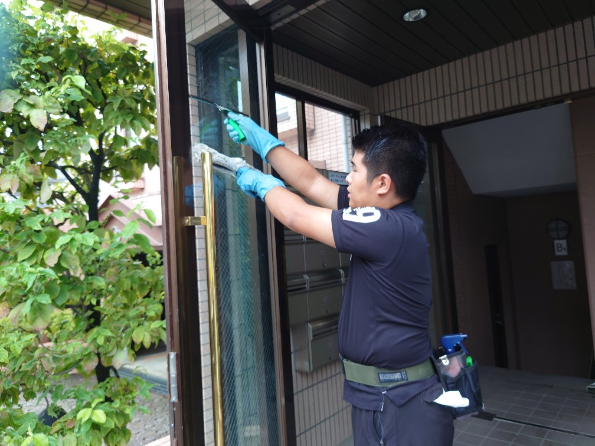

台風通過のあとに、高圧洗浄クリーニングで階段の堆積汚れ、カビ汚れ、壁面の夏の苔汚れ、カビ汚れ、床面の堆積汚れを隅から隅まで、専用薬剤を塗布してスペシャル高圧洗浄クリーニングをします!

秋の台風シーズンでは、お客様テナントビル様、オーナーマンション様の共用部のクリーニングが欠かせません!
台風通過のあとに、高圧洗浄クリーニングで階段の堆積汚れ、カビ汚れ、壁面の夏の苔汚れ、カビ汚れ、床面の堆積汚れを隅から隅まで、専用薬剤を塗布してスペシャル高圧洗浄クリーニングをします! DAIZENメソッドを用いたプロフェッショナルクリーニング秘伝のテクニックで、みるみる共用部が綺麗に復活しました!








